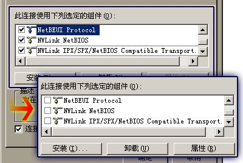

关于虚拟课堂系统的破解探索
11/9/2005 4:00:00 PM
这个学期学院为我们经济系新建了一个机房(A5053)，配置还好。
很多同学抱怨说上课的时候老师总是通过虚拟课堂软件接管我们的屏幕，同时屏蔽键鼠的操作，让我们实际操作的时间很短。
经过几次上机实践后熟悉了其软件的运作机理，于是思考破解。
很多同学抱怨说上课的时候老师总是通过虚拟课堂软件接管我们的屏幕，同时屏蔽键鼠的操作，让我们实际操作的时间很短。
经过几次上机实践后熟悉了其软件的运作机理，于是思考破解。
PART_A
由于学校的机器配有还原卡以保护数据，因此所有需要重新启动的办法都行不通。
通过调用任务管理器查看系统进程，可以清楚发现虚拟课堂的后台进程，但是尝试关闭的时候提示错误。
看来简单通过关闭进程的办法是不可行的。
通过调用任务管理器查看系统进程，可以清楚发现虚拟课堂的后台进程，但是尝试关闭的时候提示错误。
看来简单通过关闭进程的办法是不可行的。
PART_B
通过分析发现其进程是通过监听教师主机的特定端口以获取控制命令，当收到特定的指令的时候就接管屏幕，屏蔽键鼠。
于是得出初步脱离控制的思路，就是限制该程序访问网络。
首先想到的是拔掉网线或者禁用本地连接，虽然实验证明的确可以逃脱控制，但是不能上网了，这样破解的意义就大打折扣。
于是得出初步脱离控制的思路，就是限制该程序访问网络。
首先想到的是拔掉网线或者禁用本地连接，虽然实验证明的确可以逃脱控制，但是不能上网了，这样破解的意义就大打折扣。
PART_C
继续研究发现虚拟课堂是一个简单的局域网应用软件应该不具备穿过路由、防火墙等能力，也就是说其主机与被控制的机器应该在同一个局域网中，而且在同一子网之下。
于是想到一个新的办法，就是修改IP地址，达到和主机处于不同网段的办法，让客户机无法监听到主机的控制信号。
试验证明这个办法也可行，但是也是不能上网。
分析发现由于学校机房上课需要通过代理服务器，代理服务器是和学生机处于同一个子网的，修改网段后自然就不能访问代理服务器，造成无法上网。
于是想到一个新的办法，就是修改IP地址，达到和主机处于不同网段的办法，让客户机无法监听到主机的控制信号。
试验证明这个办法也可行，但是也是不能上网。
分析发现由于学校机房上课需要通过代理服务器，代理服务器是和学生机处于同一个子网的，修改网段后自然就不能访问代理服务器，造成无法上网。
PART_D
郁闷了好一会儿，重新打开本地连接的属性，细看，一切豁然开朗，原来除一些基本的协议外在使用中的还有几个非必要的协议，其中包括一个 NetBEUI 以及两个 NWLink 扩展协议。
仔细分析系统中已经安装的软件，没有发现依赖这些协议的软件。
于是怀疑这些协议是为虚拟课堂提供底层连接的。
仔细分析系统中已经安装的软件，没有发现依赖这些协议的软件。
于是怀疑这些协议是为虚拟课堂提供底层连接的。

二话不说，禁用这三个协议，按下确定，提示重新启动的时候按取消，禁用本地连接后重新启用，发现设置已经生效，成功逃脱教师主机的控制而且正常访问互联网。
其实终究来说方法很简单，很容易理解也很容易做到。
把整个分析思路写出来希望起一个抛砖引玉的作用，帮助大家思考类似的问题。
如有任何疑问欢迎与我讨论。
把整个分析思路写出来希望起一个抛砖引玉的作用，帮助大家思考类似的问题。
如有任何疑问欢迎与我讨论。

- 11/9/2005 6:04:07 PM
当我看到觉得兴奋之际，friend告诉我其实在老师接管你点主机前，把“student ”那个程序关了就可以的了，已经试验过n次^_^看来这次你走漏眼啦 ～～